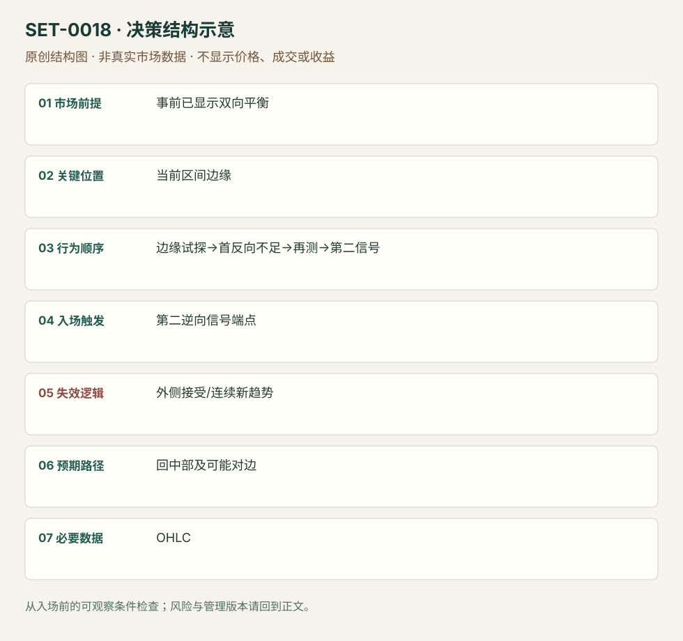

平衡区间边缘的第二次反向信号
Trading Range Edge Second Signal Fade · SET-0018 · reviewed · v1.0.0
盈利证据：not_established。审查范围与来源版本见第13节；未知字段保留缺失原因。
1. 名称与快速概览
事前已经有双向回撤与重叠的平衡区间；价格来到边缘后首次逆向尝试未推进，第二反向信号出现才考虑回区间中部。边缘外连续接受否定区间反向。
记录口径：PA core；必要数据 OHLC、prior_session_levels_optional。名称性质：编辑性描述名，英文保留来源术语以便检索。reviewed 只表示本条规则与证据记录审查通过，盈利状态为 not_established。
2. 本质与行为假说
双向价格响应和边缘拒绝可见；区间两侧的流动性故事不是成交身份事实。第二信号增加等待，也可能减少可交易空间。
3. 适用市场与环境
前面已出现深回撤、尾部、双向交替或前一日平衡延续；不能等当天走完才叫区间日。强单向新趋势反例必须保留。
来源实用市场：Brooks日内区间图。
Session：美股/ES现金参考段 09:30–16:00 America/New_York；收盘前平仓。期货夜盘单独建背景，不将其并入开盘区间。
跨市场：本版不主张已经验证的跨市场迁移；更换市场必须重定数据来源、流动性与session。
4. 出现前的观察清单
必要：入场前可证的平衡行为、上下界与中部、第二逆向信号。增强：边缘冲击未获持续跟随。否决：外侧持续同向实体/价值迁移。
5. 形成过程与状态转换
平衡已识别→边缘测试→首次逆向恢复不足→再测→第二反向信号→中部管理；有效突破建立则取消反向。
6. Entry trigger 与执行方式
Brooks示例在区间上部第二次卖出、下部第二次失败突破买入。具体信号柱端点触发为讲义的一般执行法；中间位置不因出现同样信号入。
7. Invalidation 与止损逻辑
再测外侧极值保护本次反向；区间外连续推进属于环境失效。正常扫出后再返回也仍是一笔按风险规则的亏损。
8. Exit、target 与 trade management
先在中部评估/减仓，出现明确双向响应才测试对边。来源图中后来突破新高不是预先目标；区间假说发生变化就重新定义。
9. 常见 variations
Anchor-zone或Bollinger边缘若不改变平衡→边缘→第二反向序列，作为位置辅助；不以换参考线另计。
10. 失败方式与不交易条件
正常亏损：第二信号后区间变趋势。未成立：没有事前平衡、只见水平。偏离：在中部反向或强突破第一根即猜顶。宽止损与近中部可能令交易不可执行。
11. 与相近 setups 的区别
12. 图表与案例解读
已查看SB-2bs图：左侧深回撤及再次高点提示双向环境；上部红标第二卖出，随后下部绿标第二买入，原图买例后来到新高。入场前只应看到第二信号和旧区间中部，不能把后来新高当目标。画面缺日期、品种与周期，未作真实收益认定。
- [VIS-000018] Trading Range reversals - Second buy and sell signals at reversals；定位：Trading Range: 2nd Buy and Sell Signals。先有深回撤和重叠，红/绿区域为区间边缘第二次反向。 验证：chart_viewed。

本地原创示意（VIS-000075，非真实市场数据）：

小屏阅读可打开原尺寸示意图并缩放。

此图用于对照识别顺序与风险定义；不计入真实案例覆盖率。
视觉材料元数据与查看范围
- VIS-000018 · real_source_chart / structure_and_trigger / chart_viewed
品种：未知/不适用；日期：未知/不适用；周期：未知/不适用；时区：未知/不适用
品种未在图中核对；日期未在图中核对；周期未在图中核对；时区未在图中核对；来源图表不是成交审计 - VIS-000075 · synthetic_structure_diagram / illustration_only / generated_not_market_evidence
品种：未知/不适用；日期：未知/不适用；周期：未知/不适用；时区：未知/不适用
无真实品种、日期或价格：这是结构示意
13. 证据、分歧与未知项
两份Brooks教学属同族，独立佐证有限。区间环境判定与退出需经验，本版记录可观察项并留待测试。
- [EVD-000032] Al Brooks，《10 best price action trading patterns》，SRC-0016；定位：Trading range reversals / SB-2bs。支持：宽回撤与重叠提示区间，强边缘冲击可等第二次信号反向
- [EVD-000033] Al Brooks，《Patterns on the Open》，SRC-0001；定位：PDF页6–9。支持：开盘交易区间可以双向交易，但需强信号和结构保护
审查边界：来源份数与独立核心核验分开；当前类别为 limited_single_family。正文中的概念、官方事实、衍生解说或同族资料只按其支持范围使用。
14. 可用于复盘的检查表
- ☐ 下单前的前提可核对：事前已显示双向平衡
- ☐ 事前标记位置：当前区间边缘
- ☐ 行为按顺序出现：边缘试探→首反向不足→再测→第二信号
- ☐ 实际触发符合选定版本：第二逆向信号端点
- ☐ 事先写明本次否定条件：外侧接受/连续新趋势
- ☐ 目标/路径只用当时已知信息：回中部及可能对边
- ☐ 数据满足 OHLC；记录时间、点差、滑点、队列和未成交
- ☐ 记录截止平仓及规则偏离；正常亏损不事后改成“未成立”
15. 后续验证问题
冻结入场前区间边界和环境标签，记录突破转趋势的样本；比较第一与第二信号的错过和成本。
双向相关导航
- SET-0006 趋势中的两段回撤第二次入场 H2依据既有单向趋势恢复，本条依据已经出现双向平衡并预期中部。
- SET-0037 旧价值区重新接受后的横穿 价值区轮转需前一profile及开盘外→回内的接受时间，本条无需Profile或外部开盘。
- SET-0022 开盘洗盘后守住盘前支撑 0018 在已确认平衡边缘等第二信号；本条处理现金开盘突发洗盘并依赖盘前背景。
- SET-0034 台阶久攻不破后的反向持仓退出 0018 用范围边缘第二反转信号，本条要求台阶多次失败后的范围相反破位加速。